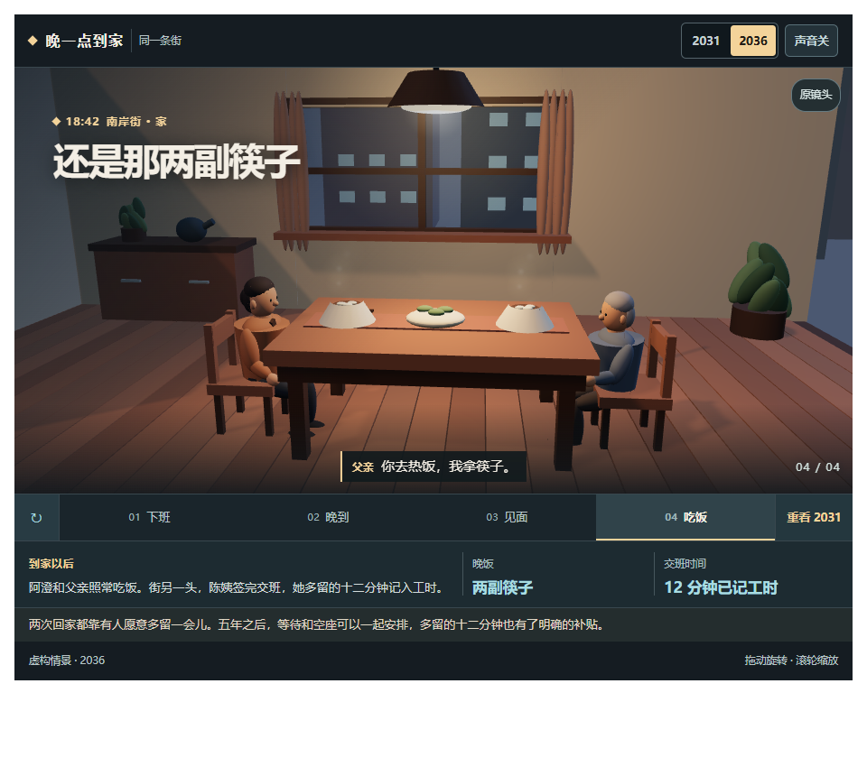
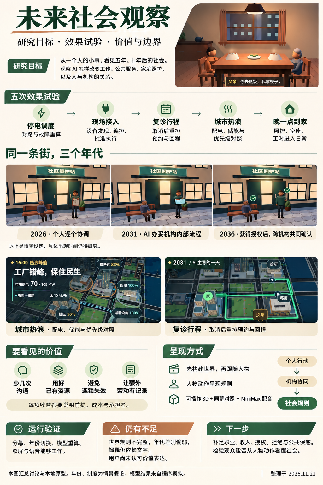
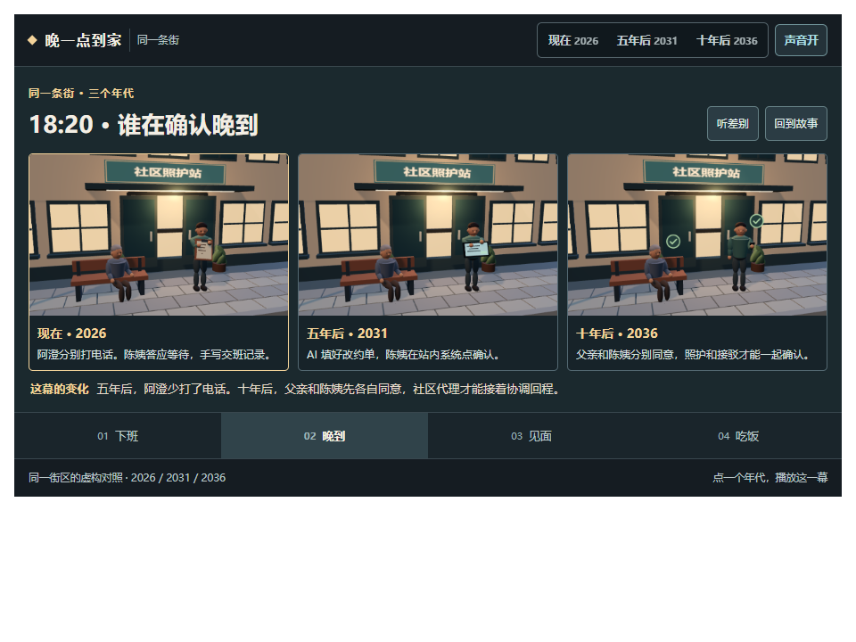

从日常看见社会
主角一次晚到，牵出照护、交通、额外劳动与授权。世界怎样运转，需要从人物行为中读出来。
从能力演示，走向社会叙事
我们想让观众走进五年、十年后的世界。跟随一个人下班、接父亲、回家吃饭，在她遇到的小事里，看到 AI 怎样改变人与人、人与机构的关系。
本页汇总本轮讨论与本地试验。未来年份、制度和人物均为情景设定。

还是那两副筷子。社会的变化，要从他们怎样回到这里看出来。
沿用本轮生成的图
这张总览以已有原型实帧为参考，汇总五次试验、三年代设定、制作方式和未决问题。

已经明确的方向
主题是未来社会怎样生活。AI 能力需要通过工作、服务、规则与人的选择，留下看得见的结果。
先让观众认识街区、行业、公共服务和日常规则，再让主角遇到一件具体的事。她的行动把这些关系逐一带出来。
“以人物的小事情渲染，侧面展示社会形象。”用户对叙事方向的明确要求
需要解释人靠什么工作和生活，服务由谁提供，资源怎样分配，以及居民能否拒绝或改变安排。
晚到要有原因，多留要有人同意，空座要确实存在。父亲、护理员和主角都应有自己的决定。
打电话、确认申请、写交班本、车辆停靠和人物上车应在 3D 里发生。MiniMax 语音补足情境和情绪。
一键进入，按幕观看，在同一时刻切换年份或规则，暂停、重播、旋转视角。游戏扩展放在世界与展示体验成立之后。
一套可继续讨论的世界
2026、2031、2036 用来建立比较。它们代表作品内的三种安排，具体出现时间仍是创作假设。
情景假设公共服务保底、商业平台提供额外便利，是讨论中提出的世界底稿。授权、补贴来源、退出机制和服务差距仍需继续设计。
从生活进入社会
《晚一点到家》的观察入口是阿澄晚到十二分钟接父亲。她只想回家吃饭，故事却牵动照护交班、回程运力和额外劳动。

约好 18:20 见面，最快 18:32 才能到。“晚到十二分钟”给三版故事提供相同起点。
电话、站内改约、跨机构授权分别进入故事。父亲需要同意等待，护理员需要自愿接受延时。
2031 的站内改约已经完成，阿澄另行安排回程。2036 的代理在获准后，确认已有班次上的两张空座。
人物故事收在吃饭。另一头的护理员怎样登记工时、谁支付补贴，让小事连接到社会制度。
目前主要是一条照护链，街区的职业、收入、治理和生活全景还很薄。纸本变平板、增加一辆车，只能呈现局部差别。它们需要更完整的世界规则和人物处境支撑。
把“AI 的价值”说具体
每一项价值都要有相同条件下的对照，并能指出参与者、实际动作和可见结果。
| 要表达的变化 | 故事或演示里怎样看见 | 还需要交代什么 |
|---|---|---|
| 少一些协调负担 | 阿澄逐个联系，变为提交一份能被机构处理的改约请求。 | 谁有权确认，出了例外是否仍要人重新联系。 |
| 跨服务形成可兑现的安排 | 照护延时、回程空座和工时分别确认后，才接成同一条行程。 | 车位、人员、预算有限，一方拒绝后怎样处理。 |
| 把资源留到更需要的时刻 | 热浪推演中，单独开关提前规划，观察后续储能和社区供电。 | 收益来自哪些模型假设，为保民生推迟了多少生产负荷。 |
| 阻断系统间的连锁失效 | 水泵先获得最低功率，后续电网少降容，避暑接驳得以运行。 | 模型依赖哪些物理阈值，现实机构是否共享信息和执行权限。 |
| 让额外劳动有明确记录 | 陈姨自愿多留的十二分钟进入交班与工时，补贴在授权时确认。 | 补贴谁出，记录能否申诉，退出后是否仍有基本服务。 |
热浪模型里，医院与接驳的恢复主要来自联合配电。提前规划储能增加的是后续可用电力。两项贡献需要分别对照，才能解释收益来自哪里。
16:00，民生优先的联合调度让医院获得所需的 18 MW，24 辆接驳运行。比例限电下，医院分到 9 MW，接驳停运。
民生优先下，17:00 社区供电为 30 MW，对照为 20 MW。至 18:00，多出 450 降温服务人次，同时有更多生产负荷延后或未满足。
16:00 同为 70 MW 可用供电。改为生产优先后，工厂从 6 MW 升至 25 MW，医院从 18 MW 降至 12 MW，接驳停运。
以上均为现有确定性程序模型的结果。人次为累计服务次数；工时、供电、阈值和资源均是作品内设定。
本轮实际形成的制作能力
这些能力来自已经生成的代码、场景和音轨。它们帮助制作和解释情景，实际省时、理解效果与维护成本仍需在具体项目中测量。
| 能力 | 现有证据 | 可复用价值 |
|---|---|---|
| 程序化 3D 场景与动作 | 城市街区、护理员动作、接驳车靠站开门、父女回家吃饭。 | 把社会关系变成可观察、可修改的空间与行动，用于原型评审和视觉讲解。 |
| 分幕与时间轴 | 四幕故事按事件推进，可暂停、重播和定位。 | 把情节、人物与声音接在同一条时间线上，支持讲解、检查和后续改编。 |
| 同条件对照 | 三年代同幕画面、同一时刻切换规则与预算。 | 固定事件和条件后发现差别，帮助定位收益来自哪个变化。 |
| 有约束的程序模拟 | 行程在预算和时限内重排，热浪模型追踪配电、储能和服务依赖。 | 让条件、后果与代价可以重复观察，适合教学模型和方案解释。 |
| MiniMax 讲解联动 | 预生成中文配音随分幕和主题切换，支持暂停、重听和静音。 | 补足人物动机与因果说明，形成可调整的互动讲解方式。 |
| 研究与效果归档 | 理解、修正、实帧、五个原型和早期 ZIP 同页保存。 | 给后续主题保留可回查的基础，清楚区分共识、设定、运行记录与未决问题。 |
本轮没有实测生成模型性能排名。人物与城市行为由已有程序执行，跨机构的真实代理执行属于情景研究范围。
探索过程与修正
每次原型都保留了可复用的部分，也留下了用户尚未认可的问题。
尝试车辆分配、封路重算、现场设备接入和临时供电。
用户指出，封路、随机变化与基础调度不足以体现未来五年。
把接驳、复诊、取药、回家放进同一份有预算和时间约束的计划。
一次简单代办的尺度仍小，观众看不出社会形态的变化。
用同一场热浪对照配电、储能和人的优先级，展示连锁后果。
系统调度成为观察窗口，人物生活与完整世界仍需要建立。
从晚到接父亲入手，用护理员、回程车和饭桌呈现社会关系。
用户指出，五年后、十年后和现在的差别与场景价值仍不清楚。
加入 2026 基线，以纸本、站内确认、跨机构授权比较同一幕。
这是最新试验。未来差异是否足够合理、强烈且易懂，仍待观众反馈。
可回看的探索档案
在本页打开演示，或进入独立页面。语音通过各演示内的播放或讲解按钮启动，同时只加载一个 3D 原型。
包含停电、现场接入、复诊和热浪四个版本。当前五个演示入口另外保留了后续更新。
知道什么，还不知道什么
先构建世界，从人物小事侧面呈现社会。画面为主，3D 可操作，语音配合情节，游戏扩展后置。
2031 的机构内协作、2036 的跨机构授权，以及公共保底、补贴和工时制度，都是当前的创作底稿。
已有记录覆盖桌面与窄屏、分幕切换、模型重算和音频播放。本次汇总复查了文件入口、社会角度切换和嵌入演示。
世界是否可信、差异是否容易辨认、AI 价值是否能从行为中读出，目前仍缺少认可和观众测试。
本轮对话中的用户要求与修正、本地 HTML 原型、Three.js 场景、确定性模拟模型、MiniMax 预生成配音和运行检查记录。本页整理已有资料。模型结果和可运行页面，分别对应设定与技术实现的验证范围。
现有网页中的社会和服务由程序模拟，语音提前生成。本轮未验证真实城市数据接入、现实机构授权和实时代理协作。